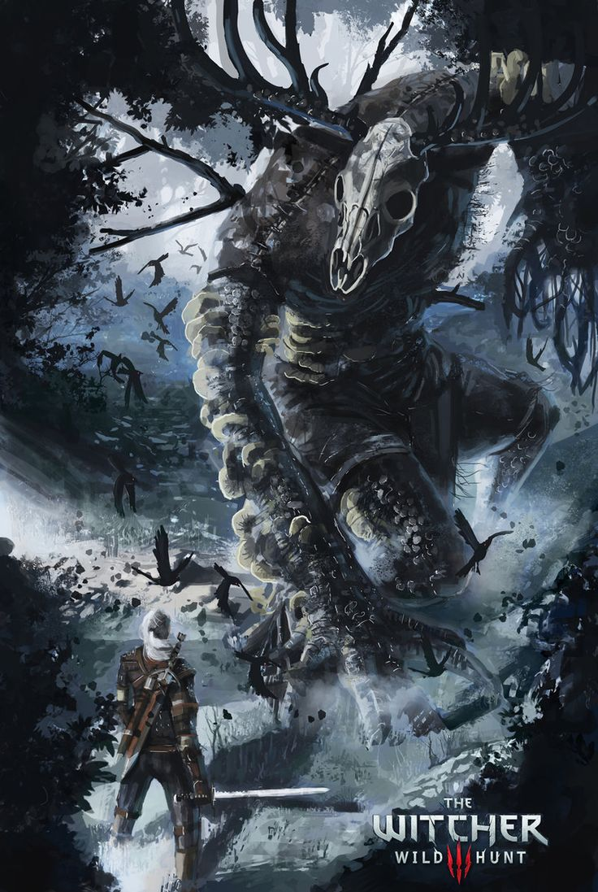
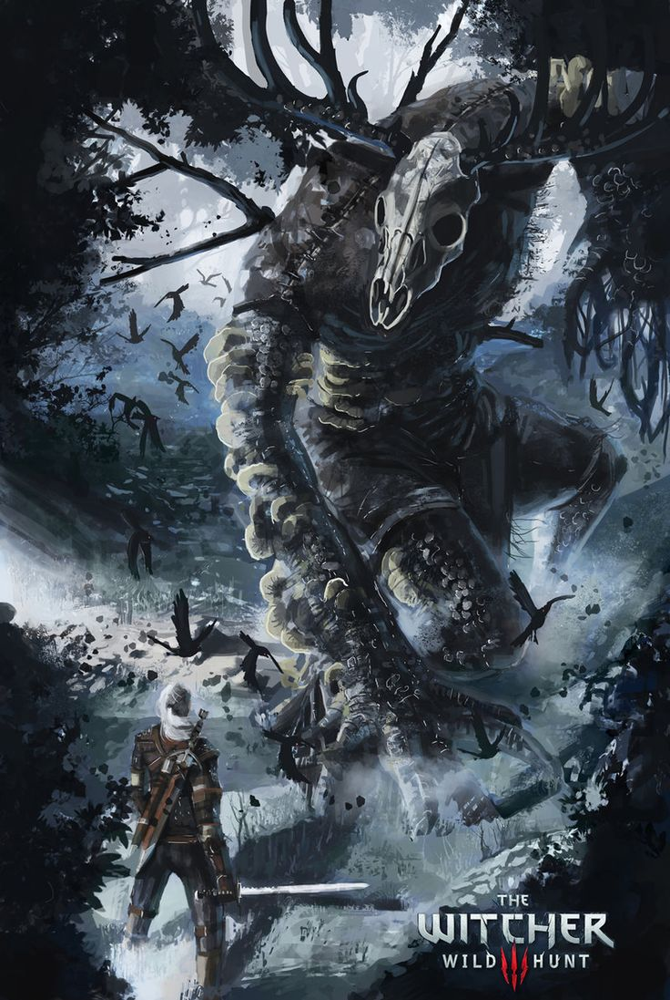

To become a Professional Monster Hunter three aspects are vital to killing monsters. Being able to master your mutations is vital to hunting as it gives you an upper hand to find weaknesses within different monsters. Joining forces with the correct alias helps within various situations to defeat certain enemies or monsters. Mastering your magic and learning when and which attacks are most effective helps challenges defeat enemies. Combat skills help you as a witcher to use the two-sword fighting style to fend off enemies with ease. This page allows you to understand which elements are most effective when fighting different types of monsters to exploit more opportunities to attack and defeat them. Being able to understand weapons allows you to use powerful swords, axes, bows, hatchets and much much more. Being able to enhance these swords helps take advantage of all tools at your disposal. These enhancements help the weapons reach maximum capacity. Being able to use those same enhancements with your armor also helps protect and repel certain attacks. Being able to understand what aspects as a witcher can be taken into advantage will make any hunt enjoyable for the player. Being knowledgeable is the only key to hunting down big game.
Monster Hunts
Witcher Contracts, also known as Monster Hunts are side quests that Geralt can undertake throughout the game world. These monster hunts will be given out, primarily, in villages, towns, and cities. Smaller contracts will be found on notice boards outside of inns while more major contracts, also possible to find on notice boards, will be given to Geralt by NPCs. For more information, check out this guide:
 
